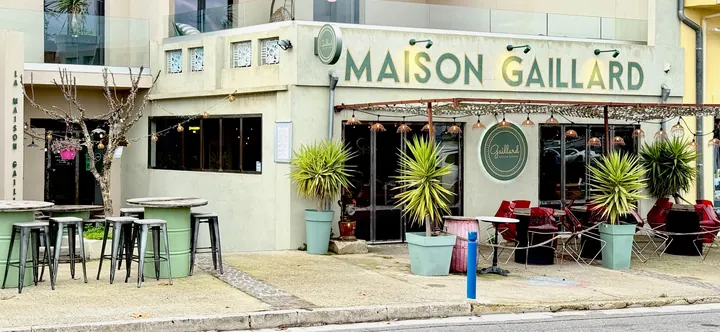
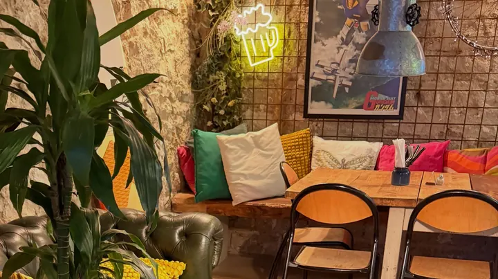
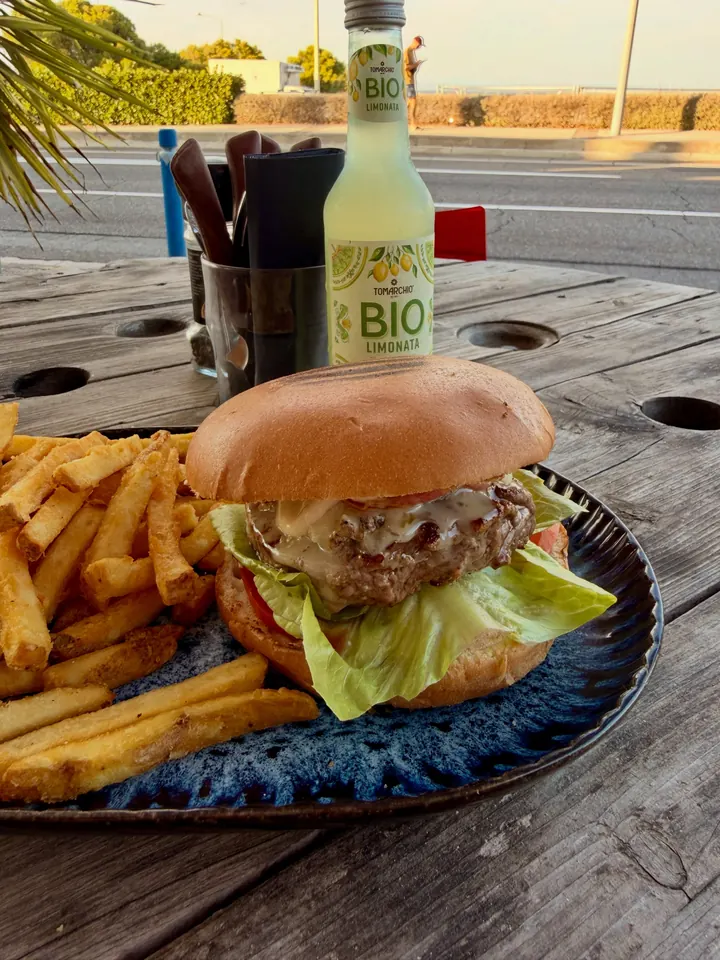
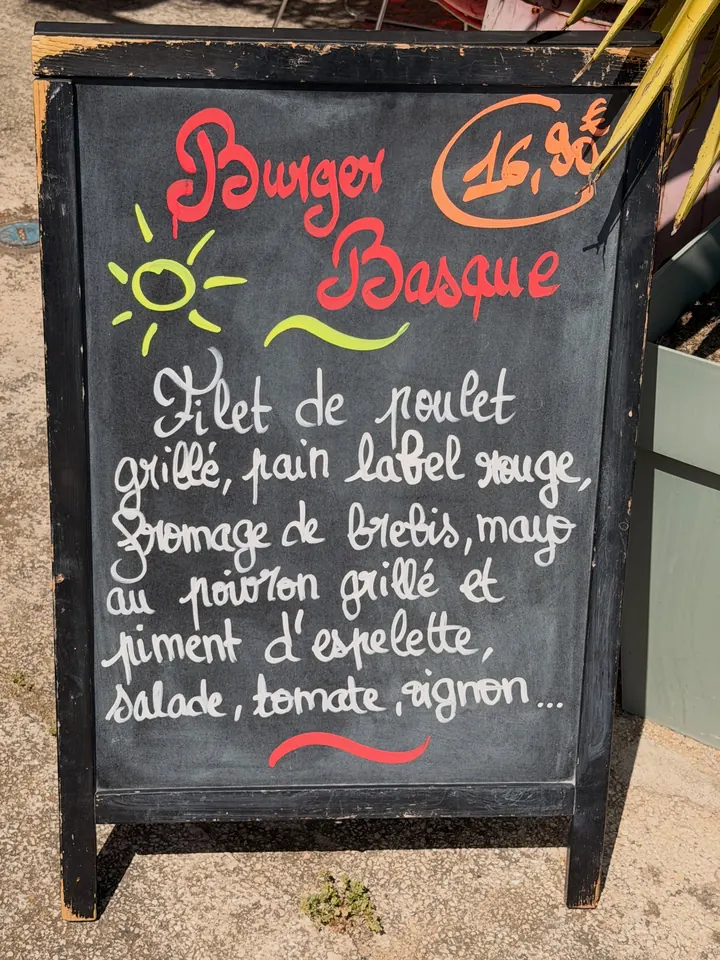
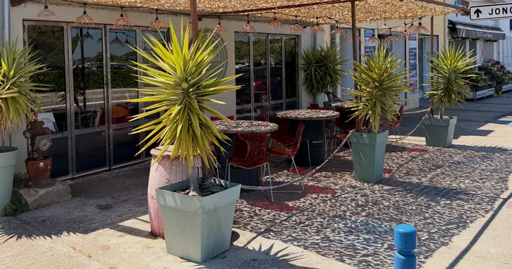
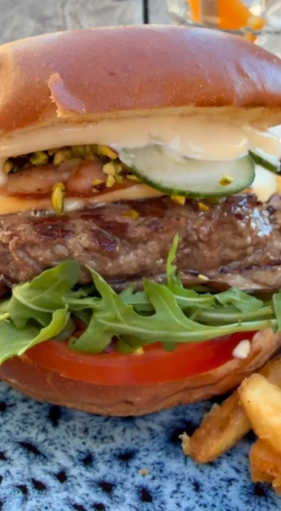

Notre lecture de Maison Gaillard
Une adresse de quai, pas un fast-food.
Vos photos montrent un burger travaillé comme une assiette : pain Label Rouge, steak Charolais, pané maison, une recette à l’ardoise chaque semaine, servi en terrasse face à l’étang de Berre. Le site doit avoir ce caractère, loin du rouge et jaune des chaînes.
Le logo
Un « Gaillard » manuscrit doré, souligné par des capitales espacées « Artisan burger & pokebowl ». Sur la façade, il vit dans un badge rond vert et or. Nous le reprenons tel quel, sans retouche, et toujours sur fond vert foncé, le seul fond où l’or reste lisible. Le favicon reprend le « G » du logo dans le rond vert de l’enseigne.

L’enseigne
Lettres vertes sur la façade, badge rond, palmiers en pots vert d’eau, guirlandes au-dessus de la terrasse. Le vert est déjà votre couleur.

La salle
Banquette aux coussins colorés, mur de pierre, néons (« Cocktails dreams »), plantes. Chaleureux, pas minimaliste.

L’assiette
Assiettes émaillées bleu profond, frites dorées, burgers servis dans un papier imprimé. Et, de temps en temps, un pain rouge vif qui arrête le regard.

L’ardoise
Chaque semaine une suggestion écrite à la craie devant la porte : Basque, Provençal, Sicilien, Mexicain… C’est votre rendez-vous Instagram.

Pour qui
Habitants de Jonquières, familles (menu enfant), salariés du midi (formule à 19,90 €), visiteurs du quai l’été. À confirmer avec vous.

Ce que le site doit faire
Donner faim en trois secondes, montrer toute la carte avec ses prix, permettre de commander en un geste (en ligne, Uber Eats, téléphone) et trouver le quai.